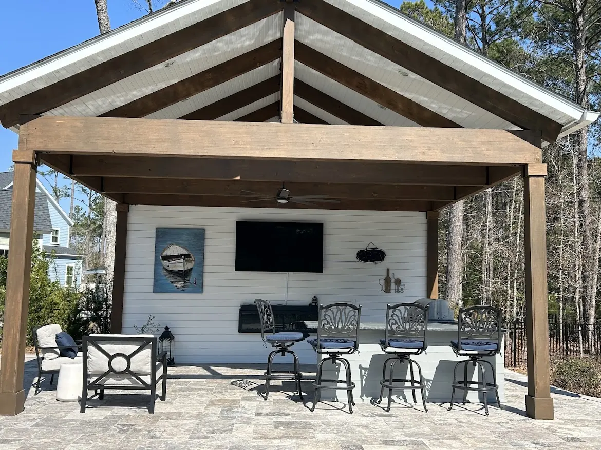
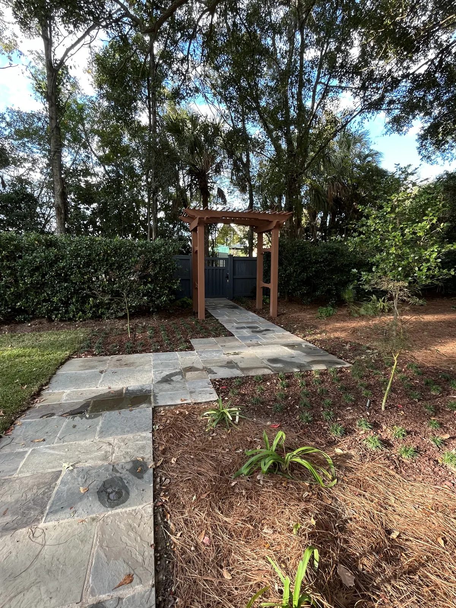
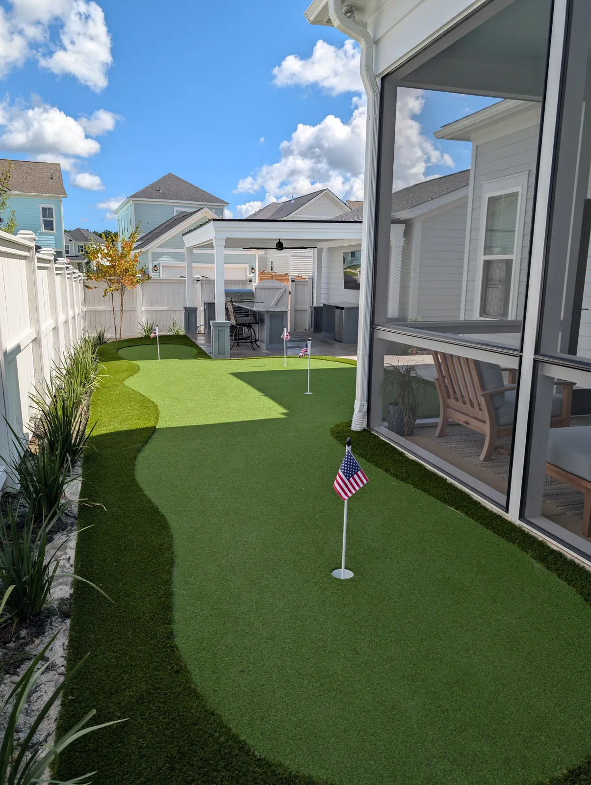

Pergola & Pavilion Installation in Charleston, SC: Costs, Styles & Materials
A pergola or pavilion turns an ordinary backyard into a destination. It defines the outdoor space, creates shade, provides a structural anchor for string lights, climbing plants, ceiling fans, and outdoor audio, and — in a climate like Charleston's — makes the difference between a backyard that gets used and one that gets abandoned by late May when the heat and sun arrive in full force.
The terms pergola and pavilion are often used interchangeably, but they describe different structures. Understanding the distinction is the first step in choosing the right project for your property and your goals.
At Cramers Landscaping, we design and build custom pergolas and pavilions throughout Charleston and the Lowcountry. This guide covers structure types, material options, cost ranges, and what makes a well-built shade structure in the coastal South Carolina climate.
Pergola vs. Pavilion: What's the Difference?

Pergola
A pergola is an open-roof structure supported by columns or posts, with an overhead framework of beams and cross-rafters that creates partial shade. The roof is not solid — light filters through the structure, climbing plants can grow across the top, fabric shade panels or retractable canopies can be added, but rain passes through the open framework.
Pergolas are ideal for garden areas, backyard seating zones, and any outdoor space where you want shade and architectural definition without full enclosure. They are typically the more affordable of the two structure types and work well in combination with a patio, fire pit area, or outdoor dining setup.
Pavilion
A pavilion has a fully solid roof — typically a pitched roof with shingles, metal roofing, or standing seam panels — supported by substantial posts or columns. Because the roof is solid, a pavilion provides complete rain protection and creates an outdoor space that is genuinely usable even during light to moderate rainfall.
Pavilions are the right choice when you want a structure that functions as a true outdoor room: an outdoor kitchen under cover, a dining area that doesn't get rained out, a built-in grill setup with a ceiling fan above, or a gathering space that works in the full range of Charleston weather conditions. Our pool pavilion post covers pavilions specifically designed for pool environments. This guide focuses on freestanding backyard pergolas and pavilions as standalone additions.
Gazebo
A gazebo is a fully enclosed structure with a decorative roof — typically octagonal or hexagonal — and railing or screening on the sides. Gazebos are less common in the projects we build compared to pergolas and pavilions, but they are an option for specific landscape contexts, particularly gardens and formal outdoor spaces.
Pergola and Pavilion Materials: What Works in Charleston
The Lowcountry climate is demanding on outdoor structures. The combination of salt air (especially within a few miles of the coast), high humidity, heavy summer rainfall, and UV exposure is hard on wood, metal hardware, and finishes. Material selection matters significantly for long-term performance.
Pressure-Treated Pine
Pressure-treated pine is the most common structural material for pergolas and pavilions in the Charleston area. Modern pressure treatment with ACQ (alkaline copper quaternary) or similar preservatives provides strong rot and insect resistance — the two biggest threats to structural wood in the Lowcountry. Pressure-treated pine takes paint and stain well, is widely available, and is cost-effective for the structural framing of both pergolas and pavilions.
For visible decorative elements — post details, corbels, rafter tails — cedar or pine trim pieces are often added over the structural framing for a cleaner finish.
Cedar
Western red cedar is the premium wood option for pergolas. It is naturally rot-resistant, dimensionally stable, and has a tight grain that takes stain beautifully. Cedar weathers to an attractive silver-gray if left unstained, and with periodic staining and sealing, a cedar pergola looks excellent for decades.
Cedar costs more than pressure-treated pine but is worth the premium for pergolas where the wood finish is a significant aesthetic consideration. For a fully exposed garden pergola with natural wood as the design statement, cedar is the right material.
Composite and PVC Materials
Composite and cellular PVC structural materials are an increasingly popular option for pergolas, particularly in coastal applications. These materials do not rot, do not absorb moisture, and are unaffected by salt air. They require almost no maintenance beyond periodic cleaning and hold their finish for the long term.
The trade-off is cost — composite and PVC pergola systems are typically more expensive than wood — and a slightly different aesthetic. For homeowners who want a beautiful outdoor structure without any ongoing wood maintenance, composite is a strong choice.
Steel and Aluminum
Metal-framed pergolas — particularly powder-coated aluminum — have become popular for their clean, modern aesthetic and minimal maintenance requirements. Aluminum does not rust, holds a powder coat finish well, and is lightweight enough to handle without heavy equipment. Steel frames are an option for larger structures or more industrial aesthetics.
Metal pergola systems are available in kit form with prefabricated components or as fully custom fabricated structures. We can build with either approach depending on the design and budget.
Pergola and Pavilion Styles for Charleston Homes

Classic White Painted Pergola
The most requested pergola aesthetic in Charleston is a traditional design with white-painted posts and beams, detailed rafter tails, and decorative corbels at the post-beam connection. This style suits the architecture of most Charleston-area homes — from traditional colonial and craftsman styles to newer coastal builds — and ages well with periodic repainting.
Natural Cedar Garden Pergola
A stained cedar pergola with a warm, natural finish is ideal for garden settings, backyard seating areas, and properties where the structure is meant to blend into the landscape rather than anchor hardscape. Climbing roses, jasmine, and wisteria grow beautifully across cedar pergola structures and are a classic Lowcountry combination.
Modern Low-Profile Pergola
Clean horizontal lines, minimal detailing, and a low-pitch or flat top profile suit contemporary and transitional home styles. Modern pergolas often use powder-coated aluminum or dark-stained composite materials. Cable wire tensioned across the top instead of traditional rafter patterns is a popular detail in this style.
Covered Pavilion with Metal Roof
A standing seam metal roof on a substantial post-and-beam pavilion is one of the most popular outdoor living structures we build in Charleston. Metal roofing handles the Lowcountry's rainfall and UV exposure better than shingles over the long term, and the sound of rain on a metal roof over an outdoor dining area is a genuinely pleasant experience. A well-designed metal roof pavilion can anchor an entire outdoor living design.
Pergola and Pavilion Costs in Charleston
Pergola Cost Ranges
Basic attached or freestanding pergola (12x12 to 16x16 ft, pressure-treated or cedar, simple design): $8,000 to $15,000
Mid-range pergola (larger footprint, cedar or composite materials, decorative detailing, retractable canopy or shade panels): $15,000 to $25,000
Custom pergola with premium materials, integrated lighting, fan, and detailed design: $25,000 to $40,000+
Pavilion Cost Ranges
Basic covered pavilion (12x16 to 14x20 ft, metal or shingle roof, simple column design): $18,000 to $30,000
Mid-range pavilion with ceiling fan, built-in lighting, and upgraded column and roof details: $30,000 to $50,000
Custom pavilion integrated with outdoor kitchen or full outdoor living design: $50,000 to $100,000+
These ranges reflect the full installed cost — materials, labor, permitting, and connection to any existing patio or hardscape. Pergolas and pavilions installed on existing pavers or concrete are straightforward to price. Projects that include a new patio or hardscape base as part of the same installation scope include that work in the total project cost.
Permitting in Charleston

Both pergolas and pavilions typically require a building permit in Charleston County and incorporated municipalities. The permit process involves submitting structural drawings for review and scheduling a post-installation inspection. Permit requirements vary slightly by jurisdiction — Charleston city, North Charleston, Mount Pleasant, and unincorporated Charleston County each have their own process.
We handle permitting as part of every structural installation. The permit timeline for a typical pergola or pavilion in the Charleston area is two to four weeks from submission to approval, which factors into the project schedule.
HOA communities may have their own architectural review requirements independent of the county permit. We work with homeowners to prepare whatever documentation the HOA needs.
What to Consider Before You Build
Orientation and sun path. A pergola that faces west will be hit with full afternoon sun. If the goal is afternoon shade, the design needs to account for the sun angle with appropriate rafter spacing, shade panels, or canopy coverage. We evaluate sun orientation during the design consultation.
Proximity to the house. Attached pergolas connect directly to the home's exterior wall and typically require a ledger board bolted to the house framing. This affects the structural approach and requires careful waterproofing at the attachment point. Freestanding structures have their own footings and don't introduce attachment concerns.
Foundation and footing requirements. All structural posts need proper concrete footings sized for the structure. In Charleston's sandy coastal soils, footing depth and diameter matter for long-term stability. We engineer footings appropriate for the structure size and soil conditions.
Electrical. A pavilion or pergola with ceiling fans, landscape lighting, string lights, and outdoor audio needs an electrical rough-in as part of the installation. We coordinate with licensed electricians for any electrical work required.
Pergola & Pavilion FAQ
How long does a pergola installation take?
A typical pergola installation takes three to five days from start to finish, depending on size and complexity. Pavilions with roofing and electrical coordination may take one to two weeks.
Do pergolas add value to a home in Charleston?
Yes. Well-built outdoor structures consistently add value in the Charleston market, where buyers place significant emphasis on outdoor living space. A quality pergola or pavilion is typically viewed as a value-add feature by home appraisers and buyers.
Can a pergola be attached to a screened porch or existing structure?
Yes, in most configurations. The structural approach depends on the existing structure and the attachment method. We assess the connection point during the consultation to confirm the approach.
What is the best wood for a pergola in coastal South Carolina?
For pure performance in the coastal environment, cedar and composite materials have the best long-term outcomes. Pressure-treated pine is the most cost-effective option and performs well with proper finishing and periodic maintenance. We do not recommend untreated pine or standard dimensional lumber for any exterior structural application in the Lowcountry.
Can I add a pergola to an existing patio?
Yes. Pergolas are commonly added to existing concrete or paver patios as a second phase of an outdoor living project. The post footings are installed through the existing surface and into the ground below.
Ready to add a pergola or pavilion to your Charleston backyard?
Contact Cramers Landscaping for a free design consultation. We'll walk your property, discuss your goals, and put together a design and quote. Call (843) 614-9773.
Planning a Project of Your Own?
See everything we design and build, or get in touch to talk through your ideas with Doug and Zach.